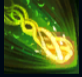

Ivern
| Ivern The Green Father | |
|---|---|
| Release date | 16.11.2016 |
| Class | Catcher |
| Positions | Jungle,Middle |
| Resource | Mana |
| Range type | Ranged |
| Adaptive type | Physical |
| Base statistics | |||
| Health | 580 – 2195 | Mana | 350 – 1200 |
| Health regen. | 8.5 – 22.95 |
Mana regen. | 8 – 21.6 |
| Armor | 36 – 87 | Attack damage | 65 – 133 |
| Magic resist. | 32 – 53.25 | Crit. damage | 175% |
| Move. speed | 335 | Attack range | 200 |
Ivern Bramblefoot, cunoscut și sub numele de ''inima codrului'', este o ființă neobișnuită, pe jumătate om, pe jumătate copac, care străbate pădurile Runeterrei și ocrotește creaturile care-i ies în cale. Știe toate secretele naturii și leagă prietenii adânci cu orice zboară, aleargă sau crește. Ivern rătăcește prin sălbăticie, împărtășindu-și înțelepciunea neobișnuită cu toți cei pe care-i întâlnește, convingând pădurile să crească mai frumos și, din când în când, șoptindu-le fluturilor secrete ce ajung inevitabil la urechile tuturor. | PRIETENUL PĂDURII Ivern nu poate ataca și nu poate fi atacat de monștrii non-epici. În taberele din junglă, Ivern poate crea dumbrăvi magice care se dezvoltă în timp. După ce dumbrăvile sale cresc complet, Ivern poate elibera monștrii dinăuntru pentru a primi aur și experiență. După nivelul 5, Ivern poate împărți buff-urile din junglă cu aliații. |
|||
|---|---|---|---|---|
 |
ÎNRĂDĂCINARE Ivern lansează o rădăcină, provocând daune și țintuind inamicii loviți. Aliații lui Ivern se pot năpusti spre inamicul țintuit. |
|||
STUFĂRIȘ Când Ivern este în tufiș, atacurile lui provoacă daune magice bonus. Ivern poate activa această abilitate pentru a crea un tufiș. |
||||
| SĂMÂNȚĂ-CAPCANĂ Ivern îi dă unui aliat un scut care explodează în scurt timp, provocând daune și încetinind inamicii. |
||||
DAISY! Ivern o invocă pe Daisy, amica sa enormă, pentru a-l ajuta în luptă. Dacă Daisy atacă același campion de trei ori la rând, va provoca o undă de șoc. |